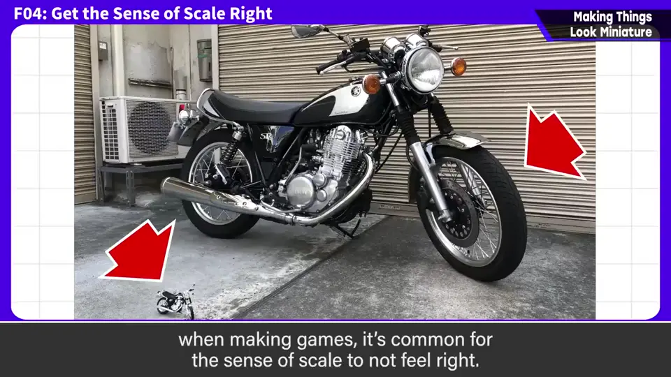
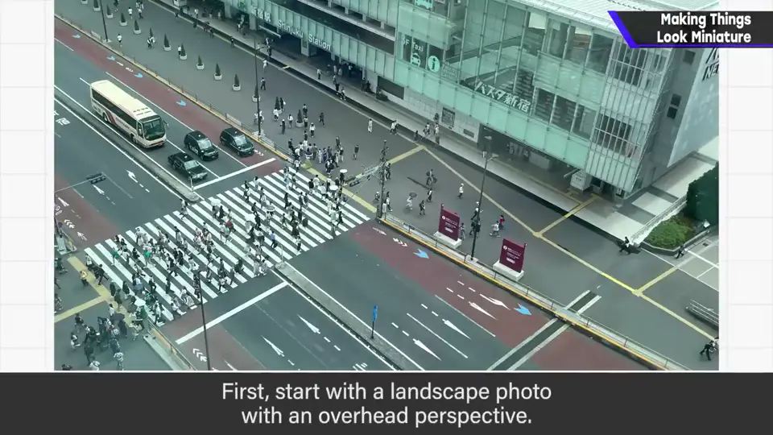
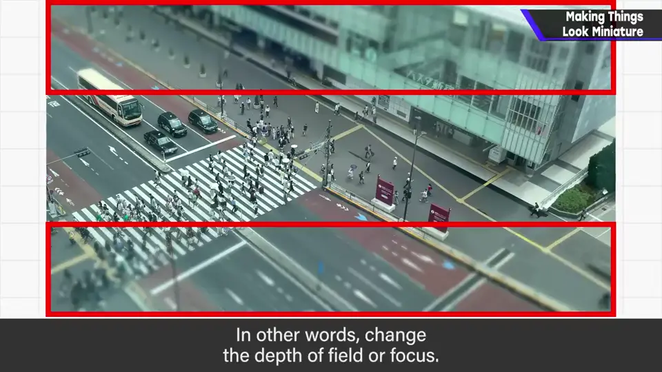
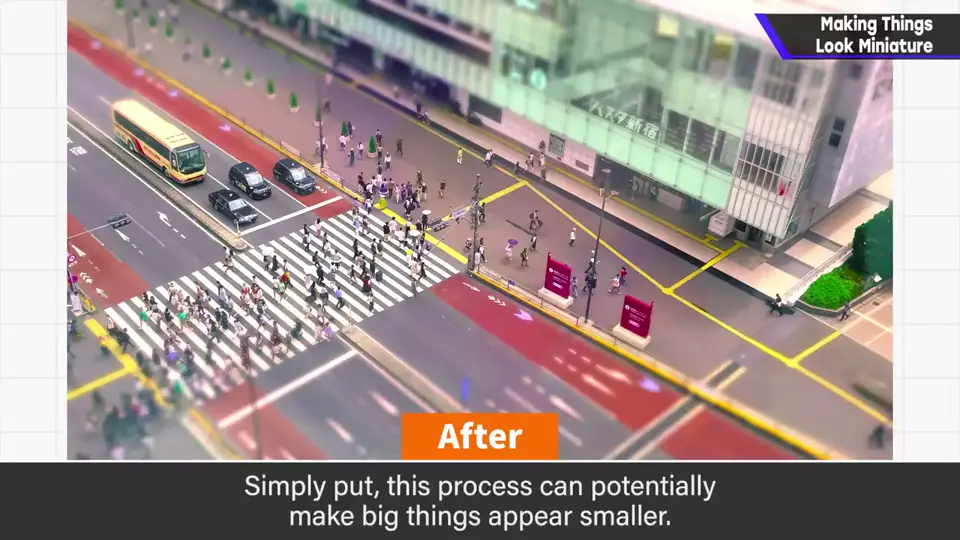
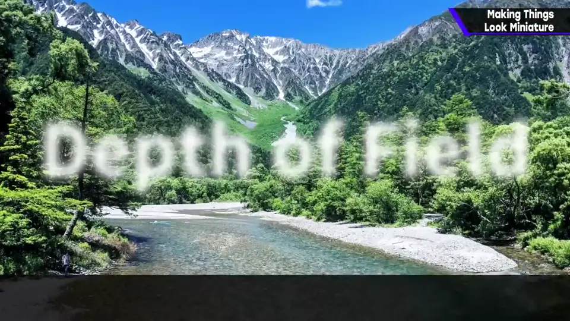
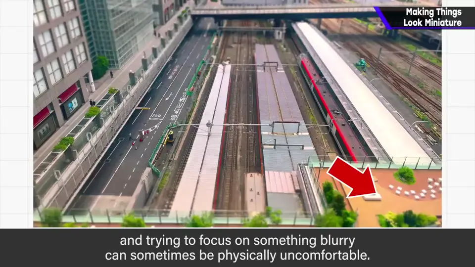
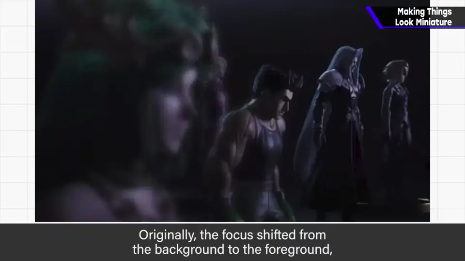
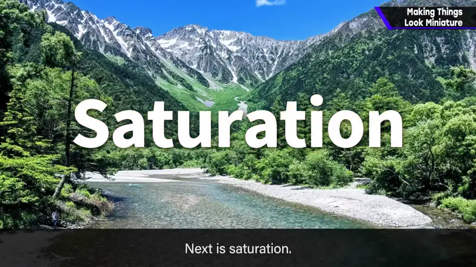
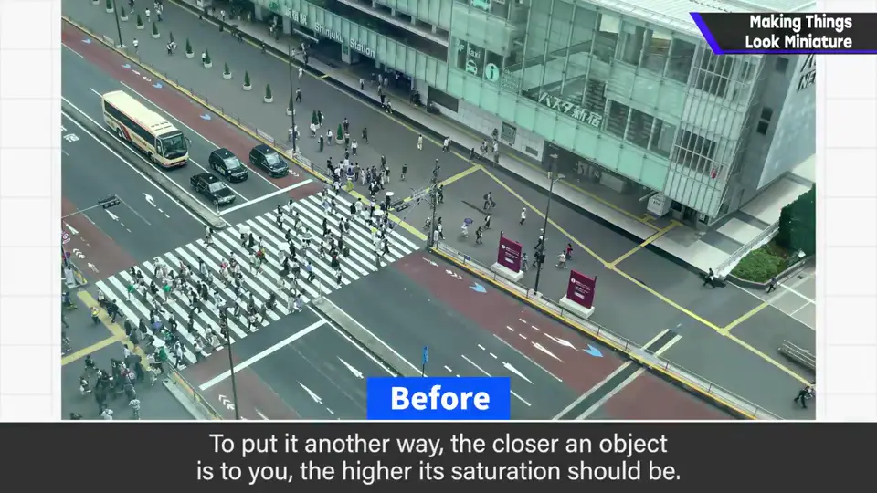
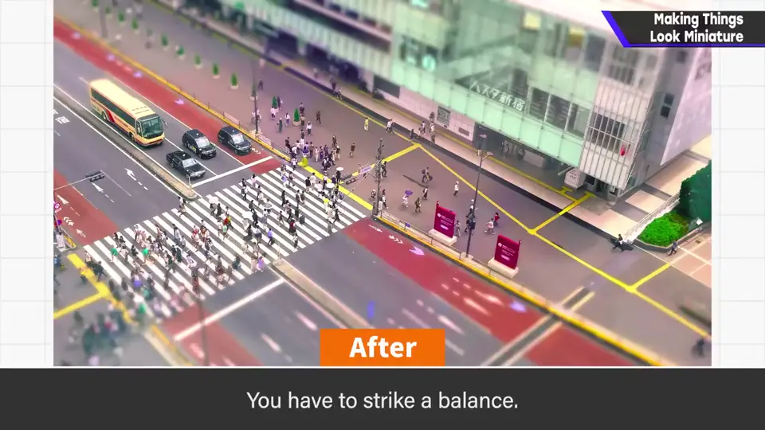

速览
图形分类开头也讲过：做游戏时常常尺度感对不上，本该大的东西看起来小。先把这个疑问放一边，突然讲讲微缩照片的做法：准备俯拍的照片；上下模糊——叫景深或焦点，为了营造近拍的感觉；提高饱和度；可以的话稍微降低蓝色，为了去掉空气透视。这样就简单地出现了微缩效果。也就是说，这样处理可能让大东西看起来小。有两个要素。首先是景深：会出气氛所以似乎很受欢迎，但除了必须有意图加入的部分，不太加为好——注视哪里因人而异，自己以为在看的地方变糊，生理上也不舒服。苏菈参战影片的这一段，起初有焦点从远处移到近处的演出，后来请人拿掉了。其次是饱和度（色彩的鲜艳程度）：大的东西要克制，大东西会有空气透视；手边的东西饱和度越高——话虽如此，差别也不太大，要取平衡。尺度感对齐的话题或许算基础，但监修时经常指出。只画素材纹理无法统一画面，要客观地看、意识到最终输出。
1. 尺度感对不上 0:03
图形分类开头也讲过：做游戏时常常尺度感对不上，也就是本该大的东西看起来小。

2. 微缩照片的做法 0:18
先把这个疑问放一边，突然讲讲微缩照片的做法：
- 准备一张俯拍的照片。
- 让上下变模糊：叫景深或焦点，为了营造近拍的感觉。
- 提高饱和度。
- 可以的话稍微降低蓝色：为了去掉空气透视。



3. 景深：少用 0:58
景深能出气氛，看起来很好用；但除了必须有意图加入的部分，不太加为好。毕竟注视哪里因人而异，自己以为在看的地方变糊，生理上也不太舒服。



苏菈参战影片的这一段，起初有焦点从远处移到近处的演出，后来请人拿掉了。
4. 饱和度：大东西要克制 1:36
饱和度是色彩的鲜艳程度。大的东西要克制：大东西会有空气透视。手边的东西饱和度越高——话虽如此差别也不太大，要取平衡。



5. 意识最终输出 1:58
自测题
1. 微缩照片的四个步骤是什么？
俯拍、上下模糊（景深）、提高饱和度、降低蓝色（去掉空气透视）。 0:25
2. 为什么景深要少用？
注视点因人而异，自己看的地方变糊生理上不舒服；除非有意图，不要加。 1:10
3. 大的东西饱和度应该怎样处理？为什么？
要克制，因为大东西会有空气透视。 1:40